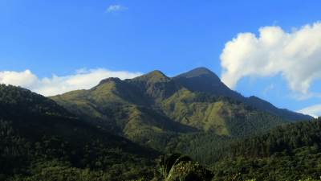

The Sabaragamuwa Maha Saman Devalaya is considered the main Devalaya of deity Saman except for the Shrine at top of Sri Pada. The history speaks of a temple at Ratnapura area since the time of king Dutugemunu of Anuradhapura Kingdom, But the recent history starts from Dambadeniya period. A court Minister called Aryakamadeva had come over to Ratnapura to make a vow for gemming, and if lucky to build a Devalaya to keep God Sumana Saman’s statue. After a sucessful gem mining expedition, he is said to have built the first devalaya dedicated to God Saman at Ratnapura. Although the devalaya was highly influenced by Hindu culture, it remained a Buddhist place of worship throughout the years.
Maha Saman Devalaya, RatnapuraThe Portuguese first landed in Sri Lanka in 1505 through the Galle Port. With the demise of Sitawaka Rajasinghe, the Portuguese marched towards Sitawaka destroying and looting temples on the way. These included Delgamuwa Raja Maha Viharaya, Ratnapura Maha Saman Devalaya and Pothgul Viharaya which were highly venerated by the Buddhists. The Ratnapura Fort and a church was built on the ground of Saman Devalaya around 1618-1620 by the Portuguese.

Our second hike in Ella was to Little Adam`s Peak, which we did in between the two longer ones. We did this trip without a guide. It is a fairly easy hike and the path is market by signs so it`s easy to find, and very popular among tourists! So expect to meet many other people from all over the world on this trip! On the two other more remote trips we did in Ella, we hardly met anybody, just some locals now and then. The Little Adam`s Peak got it`s named after it`s big brother, the holy mountain Adam`s Peak, because of the similar shape. Adam`s Peak is further west in Sri Lanka, close to Nuwara Eliya, and is 2243 m high and a much more exhausting and more challenging climb! The mountain has however three names; Adam`s Peak (this is where Adam first set foot on earth after being cast out of heaven), Sri Pada (Buddha`s footprint left by the Buddha as he headed towards paradise) and Samanalakande (Butterfly mountain, where butterflies go to die). We had plans of climbing Big Adam`s Peak, but Espen hurt his knee so we settled for the “little brother” instead. The path up the hill to Little Adam`s Peak is easy to find, and is marked by signs showing the way next to the 98 Acres Resort, to the right of this white Buddah.